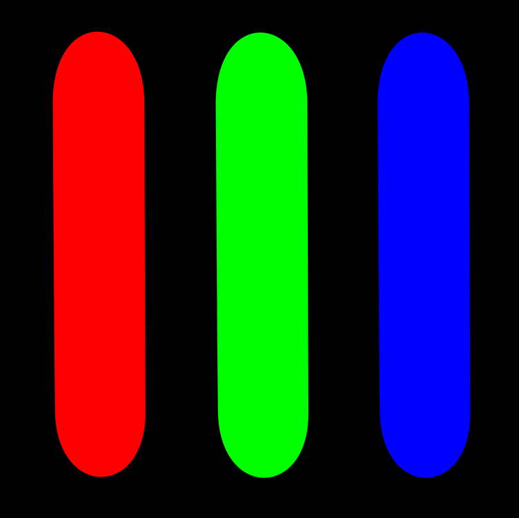
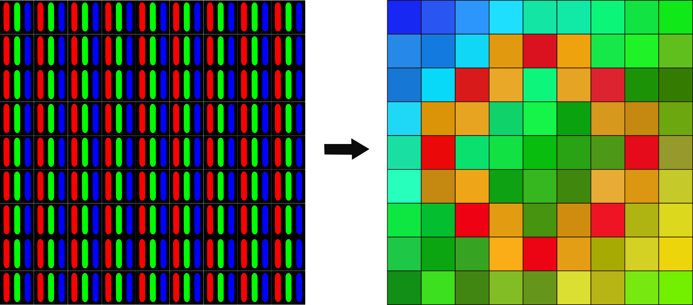
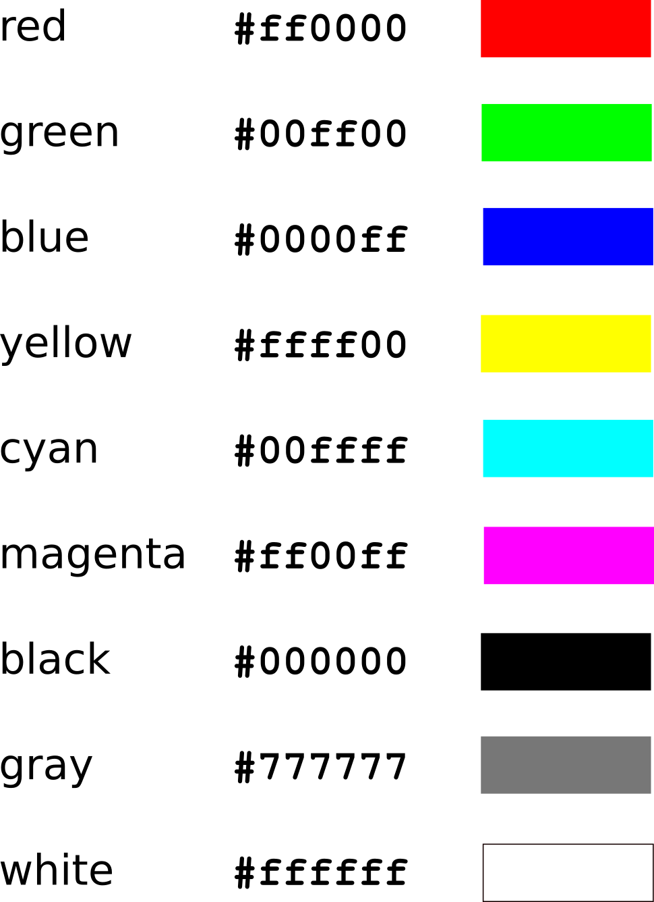
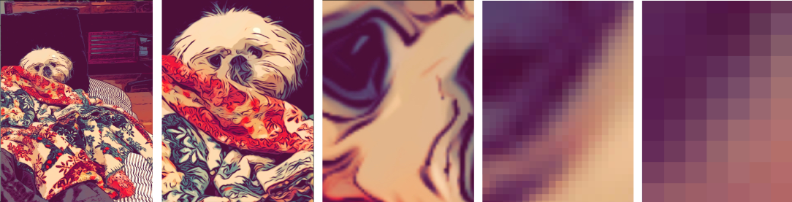
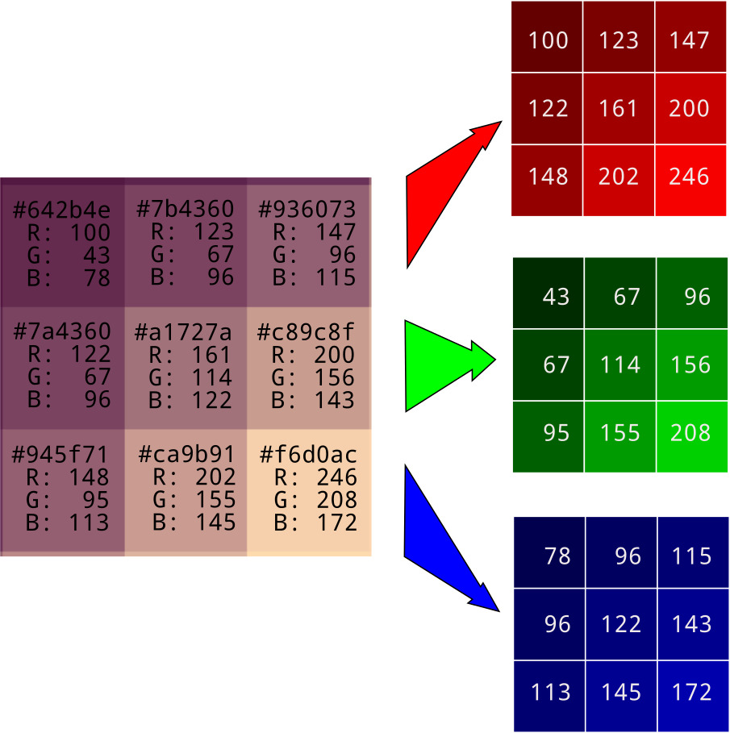

The experience of seeing the world around us is all but impossible to capture in words, from the careful steps of a marching ant, to the works of Pablo Picasso and Beatrix Potter, to a solitary oak tree, twisted and dignified. It's ridiculous to think that we could ever reduce it all to ones and zeros. Except that we have. In fact, our images are so realistic now that we go to pains to re-introduce artifacts, like the washed out colors of Polaroids or the scratches on celluloid.
This may be a blow to romamticism, but it's great luck for machine learning practitioners. Reducing images to numbers makes them amenable to computation.
Color perception
Color fascinates me because it is less about physics than it is about the physiology and psychology of human perception. All our standards are determined by what humans perceive. The range that needs to be covered, the number of channels necessary to represent a color, the resolution with which a color must be specified, and hence the information density and storage requirements, all depend on human retinas and visual cortices.
It also means that, as with everything human, there is a great deal of variability. There are deficiencies like color blindness (I myself experience deuteranomaly, a type of red-green colorblindness) and there are those with unusual abilities, like tetrachromats, who have not three types of color receptors, but four, and can distinguish colors that the rest of us can’t. Because of this, keep in mind that all of the statements we can make about perception are generalizations only, and there will be individual differences.
Although photons vibrate at all frequencies, we have three distinct types of color-sensing cones, each with its characteristic frequency response, a particular color that it responds strongly to. That means that a combination of just three light sources with carefully chosen colors in carefully chosen intensities can make us experience any color that we're capable of seeing in the natural world.
Making color
In computer screens, this is done with a red, a green, and a blue light, often light-emitting diodes (LEDs).

In practice the red, green, and blue LEDs in a computer screen can’t represent all the colors we can see. To make a colored LED, a chemical is introduced that fluoresces at about the right color. These are close to ideal red, blue, and green but they aren’t perfect. For this reason there is a bit of a gap between the range of colors that you can see in the real world (the gamut) and what you can see on a computer screen.
As a side note, lasers are capable of producing color much closer to the ideal. Commercially available laser projection systems cover much more of the human perceivable gamut, and laser micro arrays for computer screens are a current topic of research and development.
Turning color into numbers
Each pixel in a screen is a triplet of a red, a green, and a blue light source, but when you look at them from far enough away they are too small for your eye to distinguish, and they look like a single small patch of color. One way to determine which color is produced is to specify the intensity levels of each of the light sources. Since the just noticeable difference (JND) in human perception of color intensity tends to stay in the neighborhood of one part in a hundred, using 256 discrete levels gives enough fine-grained control that color gradients look smooth.

256 intensity levels can be represented with 8 bits or 1 byte. It can also be represented with two hexadecimal numbers, between 0x00 for zero brightness and 0xff for maximum brightness. Specifying the intensity of three colors takes triple that: 6 hexidecimal numbers (24 bits or 3 bytes). The hex representation gives a concise way to call out a red-green-blue color. The first two digits show the red level, the second two correspond to the green level, and the third pair correponds to the blue level. Here are a few extremes.

There are a lot more useful color hex codes here. For convenience and code readability, colors can also be represented as triples of decimals, as in (255, 255, 255) for white or (0, 255, 0) for green.
Building an image from pixels
To recreate an entire image, computers use their reliable trick of simply chopping it up into small pieces. To make high quality images, it's necessary to make the pieces are so small that the human eye has trouble seeing them individually.
 Image credit: Diane Rohrer
The color of each pixel can be represented as a 6-digit hex number or a triple of decimal numbers ranging from 0 to 255. During image processing it's customary to do the latter. For convenience, the red, green, and blue pixel values are separated out into their own arrays.

Reading images into Python code
A reliable way to read images into Python is with Pillow, an actively maintained fork of the classic Python Image Library or PIL, and Numpy.
import numpy as np
from PIL import Image
img = np.asarray(Image.open("image_filename.jpg"))
When reading in a color image, the resulting object
img is a three-dimensional
Numpy array. The data type is often
numpy.uint8, which is a natural and efficient
way to represent color levels between 0 and 255. I haven't
been able to determine that this is always the case, so it's
safest to confirm for the images in your dataset before you
start operating on them.
In order to facilitate calculations, I find it most convenient
to convert the image values to floats between 0 and 1.
In python3, the easiest way to do this is to divide by 255:
img *= 1/255
It's helpful to remember that when images are stored and
transmitted, they can be represented using
a dizzying variety of formats. Parsing these is a separate
effort. We'll rely on Image.open() and
numpy.asarray() to do all those conversions for us.
I still haven't found a way around having to verify your
pixels' range and data types without checking, but I'll keep
my eyes open.
Now we have all the image information in a compact collection of numbers. In our array, dimension 0 represents pixel rows, from the top to the bottom of the image. Dimension 1 represents columns from left to right. And dimension 2 represents color channels red, green, and blue, in that order.

In this format you can get at any value you need with
img[row, column, channel]. The green value
for top left pixel is given by
img[0, 0, 1]. The red value for the bottom left
pixel is img[2, 0, 0]. You have all the
slicing and indexing tools of Numpy at your disposal.
Don't get tripped up by the fact that row 0 is at the top of the image. As you count up through row numbers, you move down toward the bottom of the image. This doesn't match with our convention of an (x, y) coordinate axis, but it matches perfectly with our [row, column] layout of two dimensional arrays.
There can also be a fourth color channel representing the transparency of pixel, called alpha. It controls how much of whatever is underneath the image shines through. If the pixel range is 0 to 1 then an alpha of 1 is completely opaque and an alpha of 0 is completely transparent. If it's not present, alpha is assumed to be completely opaque.
Another special case is the grayscale image, where all three color channels for each pixel have the same value. Because of the repetition, it's more space efficient to store just one color channel, leaving the others implied. A two-dimensional array can also be used for monochrome images of any sort. By definition they have only one color channel.
Let the fun begin
Now that we can convert an image into an array of floats, we can really go to town. Addition, multiplication, and rearranging of pixel values are open to us. We can tint and brighten, crop and filter. We can remove errant pixels and even, with the help of neural networks, recognize different breeds of dog. All because the thing we can see is now in a numerical format.
Far from profaning the image, converting it to numbers pays homage to it. The process requires care and a deep respect for the medium. It also requires a lot of disk space. An 8 megapixel color image occupies 24 megabytes uncompressed. They say a picture is worth a thousand words, but they were wrong on that point. It's worth millions.